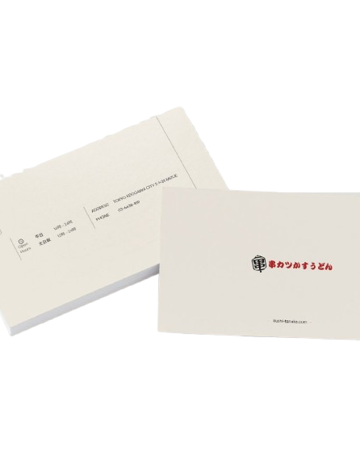
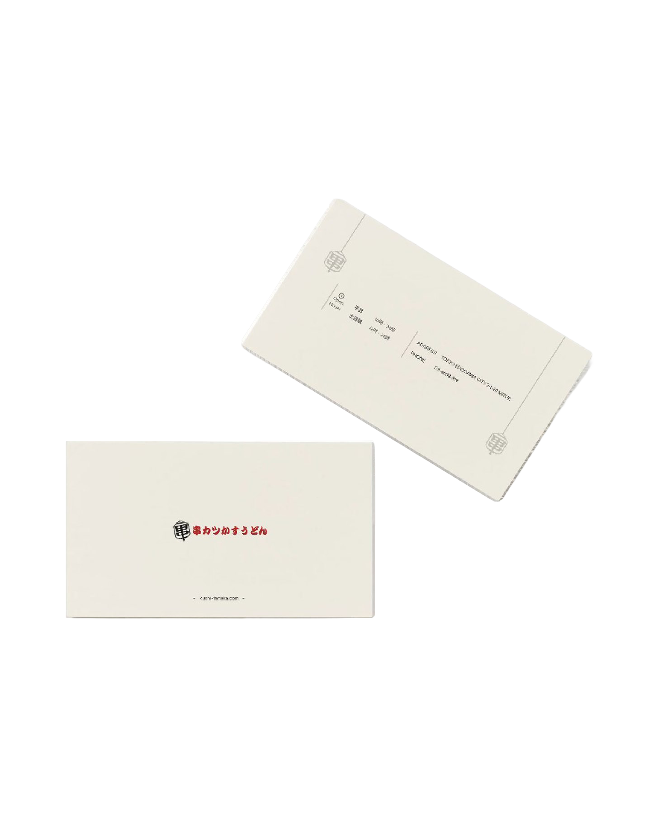
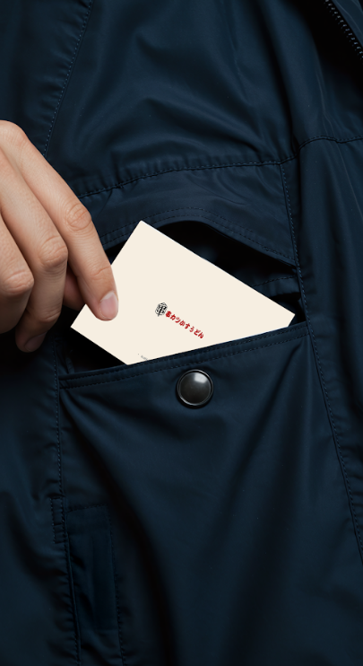
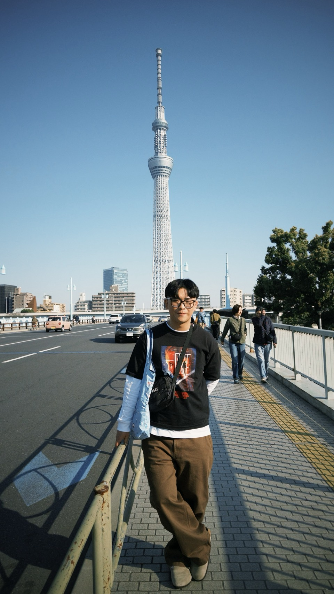
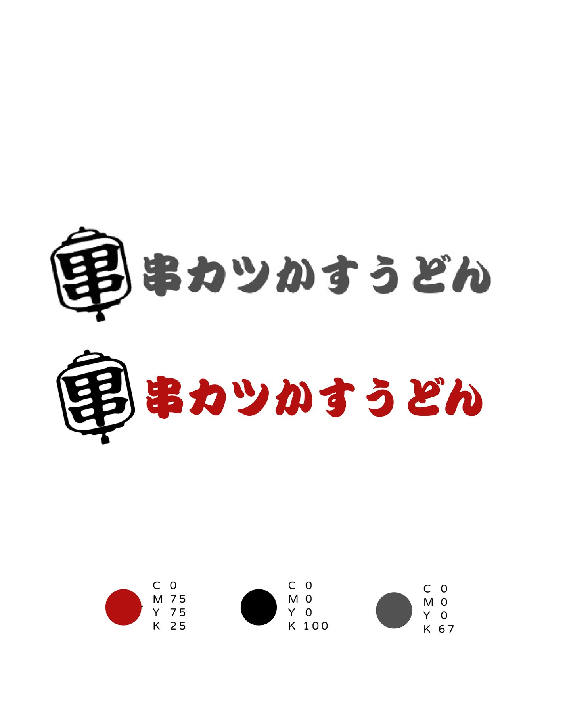
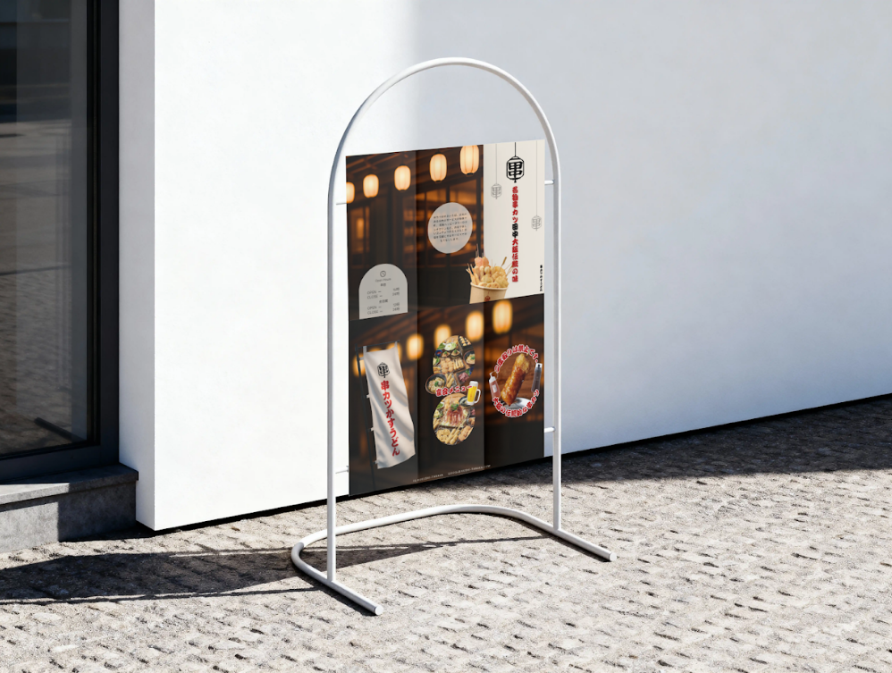
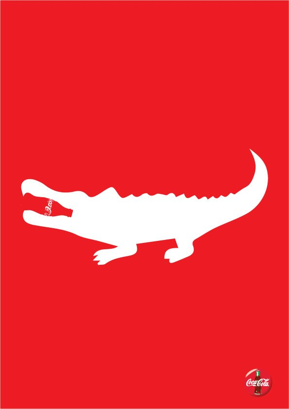
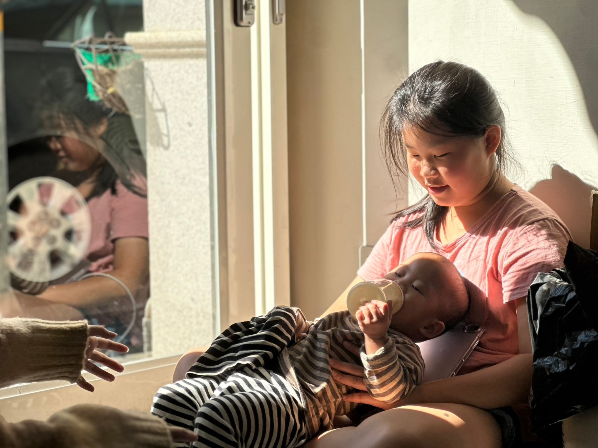
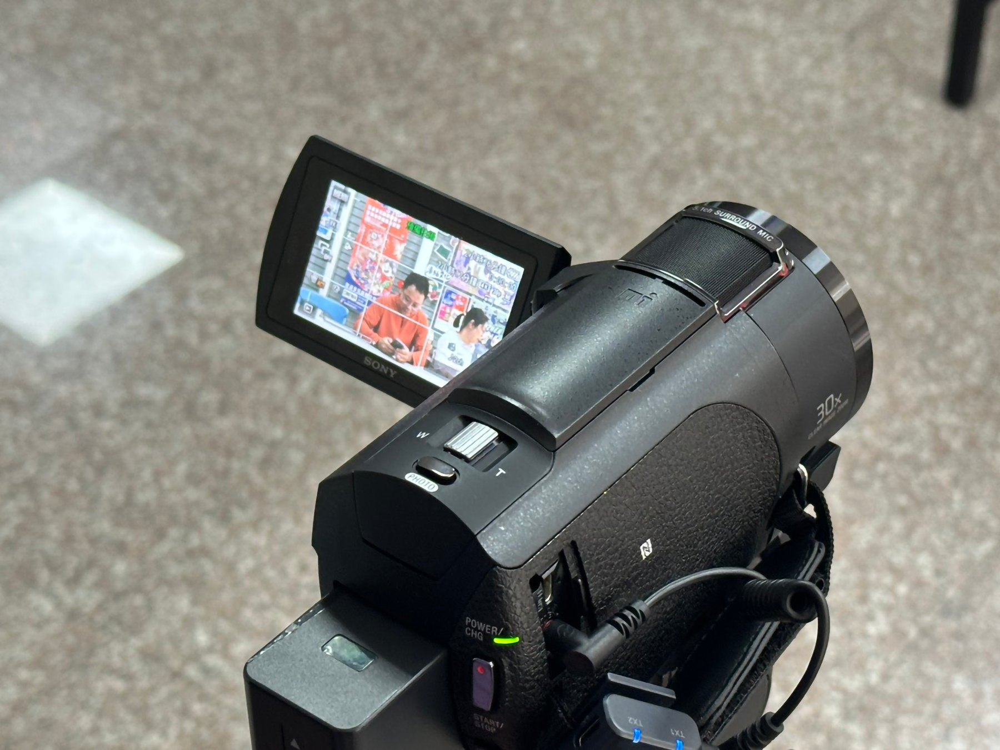
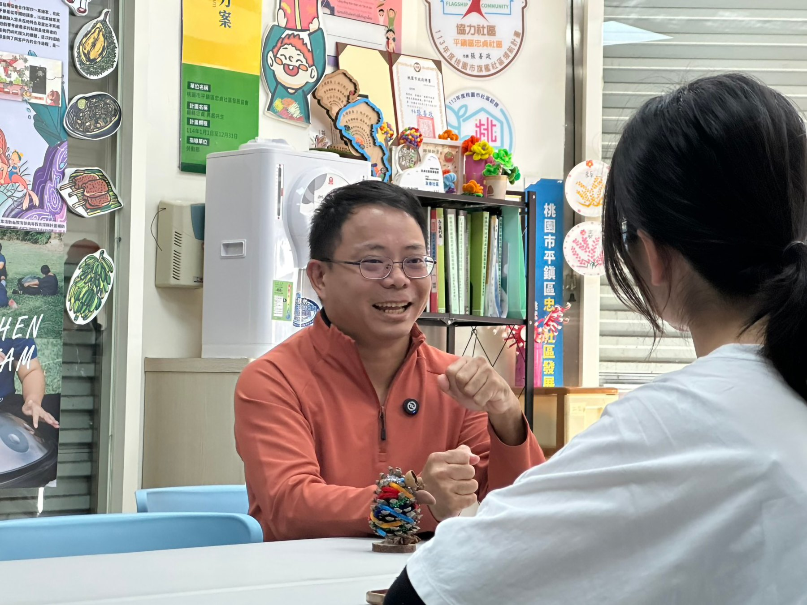

LOGO DESIGN
田中炸串品牌識別
田中炸串是來自日本的炸物專賣店。原 Logo 以草寫「田中」作為招牌；此設計重新觀察店門外醒目的燈籠元素，將「燈籠」與「田中」兩字結合，延伸出新的 LOGO DESIGN 概念。



PORTFOLIO / VISUAL & VIDEO
資訊傳播背景，熟悉平面設計、影像拍攝與後製，作品涵蓋 LOGO、品牌視覺、圖像設計、紀錄片與廣告影片製作。

ABOUT ME
畢業於新竹市私立磐石高中，目前就讀元智大學資訊傳播學系。
113 學年度元智大學資訊傳播學系系學會幹部；114 學年度擔任 YZU ISEE 實習團隊成員。
熟悉平面設計與影像後製工作流程，常用工具如下：
並具備影像企劃、拍攝與剪輯經驗。
01 / DESIGN
田中炸串是來自日本的炸物專賣店。原 Logo 以草寫「田中」作為招牌；此設計重新觀察店門外醒目的燈籠元素，將「燈籠」與「田中」兩字結合，延伸出新的 LOGO DESIGN 概念。



以高對比色塊、人物影像與品牌元素進行版面構成，強調視覺節奏與社群圖像的吸睛效果。



02 / VIDEO PRODUCTION
本計畫紀錄忠貞新村一對志工夫妻的真實故事，聚焦家庭遭逢變故後，社區志工如何接力伸出援手。影片透過紀實影像與口述訪談，呈現「從受助到助人」的善意循環，以及生命在逆境中重新找回色彩的過程。



以訪談方式呈現外國學生在台灣與元智大學的生活經驗，透過人物影像、字幕與場景素材建立親切的敘事節奏。
延續系列訪談，深度捕捉不同國籍學生在校園中的跨文化碰撞與日常生活點滴。
以忠貞新村與貿東米干的人情味為核心，透過兩分鐘行銷廣告捕捉職人溫度與鄰里歸屬感。身為攝影負責人，鏡頭聚焦老闆與老顧客間不言而喻的默契，並以暖色調與特寫呈現「懂你」的品牌價值。
PORTFOLIO SITE
Visual Design / Documentary / Commercial Video